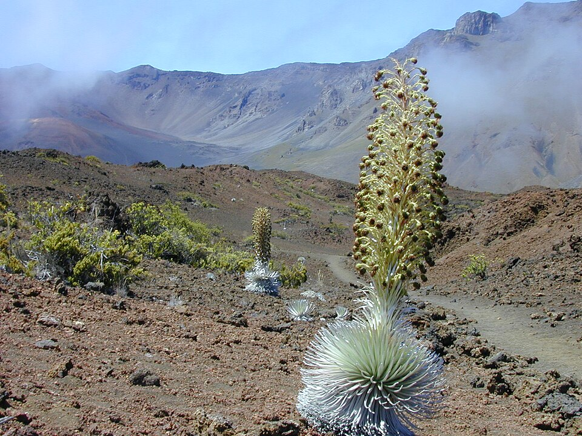

Silversword Loop
Place: Silversword Loop, Haleakalā National Park, Maui
Type: Trail / native plant habitat / conservation landscape
Story it tells: A short trail built to protect one of Hawaiʻi's rarest plants while allowing visitors to experience the unique alpine ecosystem of Haleakalā.

Silversword Loop is a short trail branching from the Halemauʻu Trail within Haleakalā National Park. Though only about a quarter mile long, the loop provides access to one of the most concentrated and accessible populations of the Haleakalā silversword, known in Hawaiian as ʻāhinahina.
The Haleakalā silversword is one of Hawaiʻi's most unusual plants. Covered in reflective silver hairs that help conserve moisture and protect against intense sunlight, individual plants can live for decades before producing a single towering flower stalk. After blooming once, the plant dies. Some silverswords survive for more than fifty years before reaching this final stage of their life cycle.
By the late nineteenth and early twentieth centuries, silverswords had declined dramatically. Visitors often collected them as souvenirs, while cattle and other grazing animals damaged and ate fragile populations throughout Haleakalā crater. Conservation efforts eventually stabilized the species, and today the plant is federally protected. Climate change is its greatest contemporary challenge.
Despite appearances, the silverswords surrounding the trail were not planted by people. The loop was constructed by the National Park Service to protect naturally occurring plants already growing in the area due to optimal ecological conditions. By directing visitors onto a defined path, the trail helps prevent damage to tiny seedlings hidden within the volcanic gravel.
Along with silverswords, visitors may encounter native birds and nēnē, Hawaiʻi's state bird, which forage throughout the area and generally exist harmoniously.
Today, Silversword Loop offers a close look at one of Haleakalā's signature species. The trail reflects both the fragility of Hawaiʻi's native ecosystems and the efforts required to preserve them for future generations.